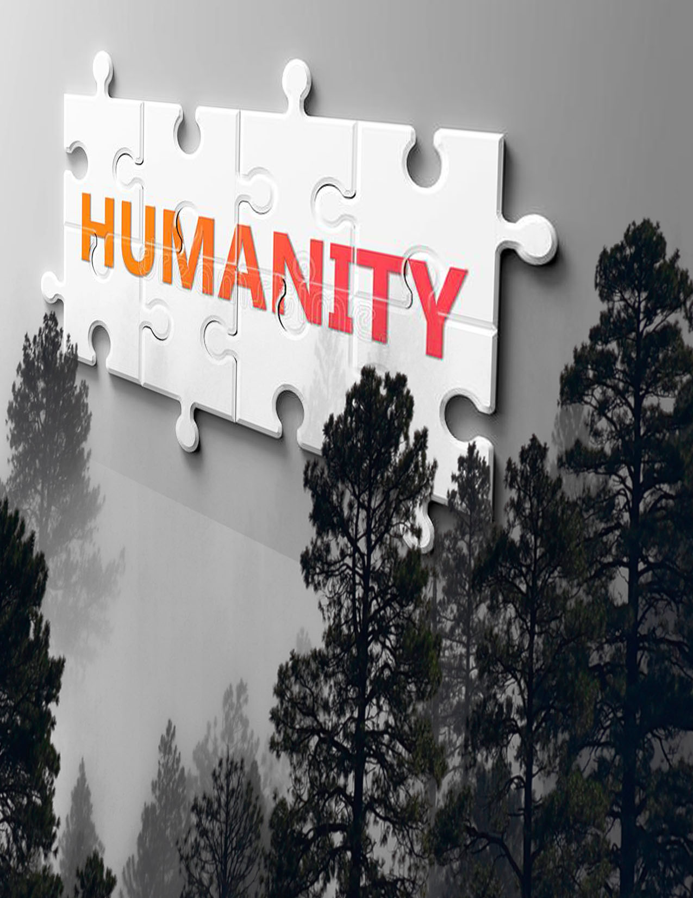

About me
As a web developer, I have learned about HTML ,CSS & JavaScript,
Great learming.com Helped me to learn a lot in frontend developer...


Hi I'm Antony jaya surya , this is first project as a front end developer hope you like my page and support me.... read my Humality story book by plessing STORY or STORY BOOK in the menu page above. Thank you for visiting my page...

I WAS UNCONSCIOUS IN A DARK FOREST
A day morning, it's a sunny theme ,in the middle of the
forest, a tree was smashed, one tiny little sparrow, flying
over the tree and to the ground, there the bike parts was
broken down over the ground..(in a smooth action).
FIRST PAGE OF HUMALITY
I OPENED MY EYES SLOWLY,THE VISION WAS BLUR
i slowly opened my eye (slowly),my eye vision was blur,i
started to refresh my mind, i sawed my surrounding was
covered with trees, i understood that i was in a forest, i
suddenly got a pain on my head and when i touch my head,
my
hair and beard grown long,i understood that i was here for
long time, i don't know what happened to my head. and it
surprised me when i tried to imagine my face....
i forgot my
face how my face look like, i forgot my name, i forgot
entire past, i don't even recognize my parents. the only
thing i could recognize was my finger point at a two persons
and a lady sound which she was shouting help him" help him!.
and i was laying on the ground.
that was the last scene i
could remember. that image was running on my mind . that
last movement was not so clear and also something missing in
it. it was impossible for me to remember the missing one in
it.
the real thing which unfocused my brain was why i
couldn't recognize my face but instead of those two people.
so that give me a clear description for me ,that the two
person took major please in my past.my next doubt was. how
did i live this many days without food.but i don't have any
answer for it.
CLICK STORY BOOK in the menu to Read BOOK...
As a web developer, I have learned about HTML ,CSS & JavaScript,
Great learming.com Helped me to learn a lot in frontend developer...